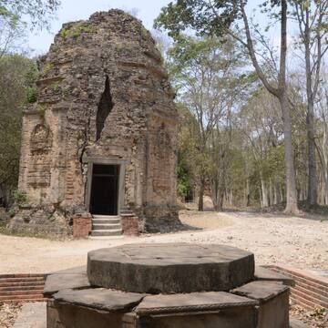
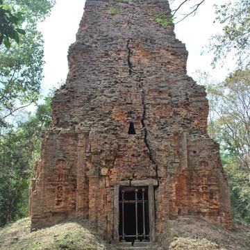
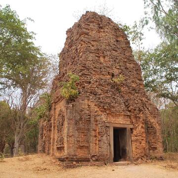

The archaeological site of Sambor Prei Kuk, “the temple in the richness of the forest” in the Khmer language, has been identified as Ishanapura, the capital of the Chenla Empire that flourished in the late 6th and early 7th centuries AD. The property comprises more than a hundred temples, ten of which are octagonal, unique specimens of their genre in South-East Asia. Decorated sandstone elements in the site are characteristic of the pre-Angkor decorative idiom, known as the Sambor Prei Kuk Style. Some of these elements, including lintels, pediments and colonnades, are true masterpieces. The art and architecture developed here became models for other parts of the region and lay the ground for the unique Khmer style of the Angkor period.
  
Sambor Prei Kuk Temple Zone is part of the remains of ancient Ishanapura
"the temple in the lush forest", which was the capital of the Chenla
Empire that flourished over much of Southeast Asia in the late 6th and
early 7th centuries AD, and whose architectural achievements laid the
foundations for those of the later Khmer Empire. The extensive Temple
Zone of 840 hectares lies to the east of the remains of the moated city
and is linked to the river Stung Sen and a possible harbour of
Ishanapura by three earthen causeways between 600 and 700 metres in
length.
Within the Temple Zone, an outstanding ensemble of 186 fired brick
temples with sandstone detailing reflects the introduction of technical
and spiritual ideas of the Hindu Hariharan and Sakabrahmana cults from
India and Persia respectively and the resulting convergence of these
with animist and Buddhist elements that produced the unique Sambor Prei
Kuk artistic style, which later heralded the Khmer style developed in
Angkor. Inscriptions in Sanskrit and old Khmer on some of the temples
reflect the adoption of a “God-King” in the centralized state, while
others record temple activities, the names of kings and other
individuals, details of religious and political life, and suggest the
overall boundaries of the empire. The temple reliefs are the first signs
of visual narratives in temple decoration which go beyond the earlier
standard heraldic displays of deities in small medallions or small
figures riding mythological animals.
There are three main temple complexes of Prasat Yeai (Southern Group),
Prasat Tao (Central Group), Prasat Sambor (Northern Group, including the
Prasat Sandan Group and Prasat Bos Ream). Each has a central tower on a
raised platform surrounded by smaller towers and other structures, and
are enclosed by square brick and/or laterite walls, two for the central
and south groups but three for the Prasat Sambor complex with each outer
wall extending to 389 metres. These three groups contain 125 individual
temples with 46 other temples and structures in the surrounding area
including the Prasat Trapeang Ropeak and Prasat Kuok Troung groups. To
the north, a satellite zone of 16 temples in the Prasat Srei Krup Leak
and Prasat Robang Romeas groups display the architectural transition
from the earlier Zhenla (Chenla) architectural style to that of Sambor
Prei Kuk. In this area extensive archaeology layers built upon each
other remain to be uncovered.
The temples are constructed in a variety of shapes, configurations, and
sizes, but of special note are 11 octagonal temples, designed in
accordance with the general principles of the ancient Indian Manuals of
Architecture, (although with no known Indian precedent). These are seen
to represent the flying octagonal palace of Indra or Vimana Trivishtapa,
the heaven of Indra and of 33 gods. The outside walls are decorated with
Hindu iconography, and in six temples there are exquisite sculptural
depictions of flying palaces.
The extensive ensemble of religious buildings and their ancillary
structures together with 102 hydraulic features display achievements in
planning, technical ingenuity, execution, and resource management not
previously seen in Southeast Asia.
Criterion (ii): The Sambor Prei Kuk architectural and
artistic style of the Temple Zone of Ishanapura, as exemplified in the
layout, architectural forms and sculptured reflects on 186 fired bricks
temples with sandstone detailing, presents a vivid convergence of
spiritual and technical influences between Hindu cults predominantly
from India and Persia and elements of animism and Buddhism, which became
a model that spread to other parts of the region and eventually led to
the crystallization of the unique Khmer style of the Angkorian period.
Criterion (iii): The Temple Zone of Sambor Prei Kuk of
Ancient Ishanapura, in terms of the scale and scope of its surviving
buildings and watercourses, is an outstanding testimony to the cultural
traditions of the Chenla Kingdom, which flourished over much of
Southeast Asia in the late 6th and early 7th centuries AD, and whose
architectural achievements laid the foundations for those of the later
Khmer civilization in the Angkorian period.
Criterion (vi): The temple inscriptions in the Khmer
language of the Temple Zone of Sambor Prei Kuk reflect the concept of
the God-King, which according to legends originated in Vat Phou, was
further developed during the Angkor period, and then much later
influenced Thailand’s four pillared administrative system in Ayutthaya.
It remained a concept that was fundamental to the political and
governance systems of Cambodia and Thailand until the beginning of the
20th century.
The property covers the Temple Zone of Sambor Prei Kuk and its entire
surroundings together with the wooded area that is the origin of the
site's current name. All the still-standing buildings, most of the known
remains of the hydraulic elements, all causeways and all the currently
known temples and areas identified as holding further of archaeological
remains of temples are contained within the boundaries.
The Temples zone has suffered from the ravages of time, vagaries of
climate and recent historical events as well as forest encroachment, all
of which have led to the degradation of some monuments. Over time, parts
of the monuments and objects belonging to the temples have been moved
and/or looted. However, the main disaster was the international conflict
that placed Cambodia in a war zone from the late 1960s to the early
1990s. Despite these tragic events, the major temples retain their
original form and materials, despite repairs and modifications carried
out from the 7th to the 11th century. Although a number of decorative
elements, statues, and inscriptions remain in situ, most of the
important sculptural masterpieces are in storage or exhibited in
museums. Archaeological surveys have indicated that many of the buried
structures are in good condition. The system of dykes, canals, and
hydraulic features, numbering 102 sites, are intact, with many still in
use today.
Despite decay, the still-standing temples display authenticity in form and design and demonstrate Indian cultural and architectural influence during the Chenla period in a unique Sambor Prei Kuk Style. In terms of materials, the remnant features retain their original substance because of sympathetic restoration to damaged brickwork that continues traditional techniques and the use of old bricks. This helps maintain the authenticity of form, function, and visual qualities. In addition, and by comparison with Angkor, there have been relatively fewer physical interventions and no hypothetical reconstruction. Minor reconstruction activity has occurred in some temples, but mainly to ensure structural stability and all restoration interventions are reversible. Many other temple remains are highly vulnerable and await consolidation and conservation.
The Temple Zone of Sambor Prei Kuk, archaeological site of ancient
Ishanapura and buffer zone is protected by the Royal Decree of 24
December 2014 and by the Law on the Protection of Cultural Heritage
(Royal decision NS/RKM/0196/26 dated 25 January 1996). Within this
framework, the National Authority for Sambor Prei Kuk (NASPK) is
responsible for the overall management of the property and its buffer
zone, including conservation, protection, restoration, development
activities in progress, as well as for the interpretation of its
heritage values for visitors. Work is guided by a Management Plan.
Conservation activities are carried out in accordance with a
fifteen-year Conservation Plan, based on a detailed risk analysis of the
temples, and in accordance with a Conservation Manual that delineates
conservation approaches for the highly fragile temples and their
sensitive surroundings.
NASPK is supported by a local NGO, "The Conservation and Development
Community for Sambor Prei Kuk", established in 2004 with the agreement
of the Ministry of Culture and Fine Arts, which has played a crucial
role in the sustainable conservation of cultural heritage and in
developing engagement with the local community.